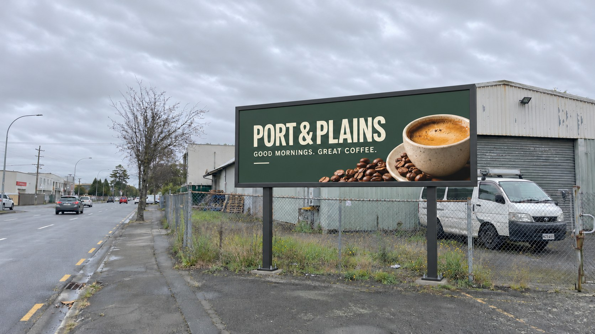

Billboards with presence.
Give your message room to breathe. Go bold with a billboard campaign built around your brand and your audience.
Big ideas deserve
a bigger stage.
Billboard and outdoor advertising that puts your business in the picture. Right here in Christchurch and Canterbury.
Get your business out there
On the morning commute. On the way to the coast. In the neighbourhood you call home.
Outdoor advertising is part of the places we live. At Vant Media, we help businesses think bigger about how they show up — with clear messages, considered locations and creative that makes an impression.
Have a campaign in mind? ↗Give your message room to breathe. Go bold with a billboard campaign built around your brand and your audience.
Christchurch is our starting point. Let’s talk about where your customers are, and how outdoor can fit your plans.
From your first idea to the practical next steps, speak directly with Shane about your brief, timing and budget.
Three imagined Canterbury brands.
Three ways to stand out in the everyday.
A bit of creative licence: these are AI-generated campaign illustrations for fictional businesses. They show creative possibilities, rather than actual clients, booked sites or available locations.
A launch, a local favourite, a fresh idea. Share your goals, audience and rough timing.
We’ll discuss campaign options, creative requirements and a budget that makes sense for your brief.
Agree the details with Shane and take the next step towards getting your message outdoors.
Tell Shane what you have in mind.
We’ll take it from there.